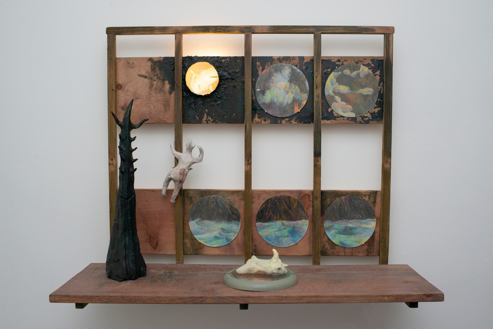
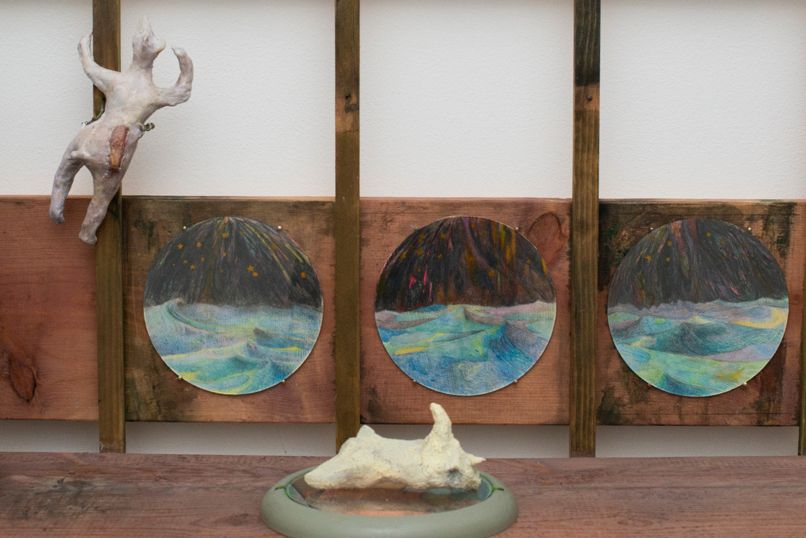
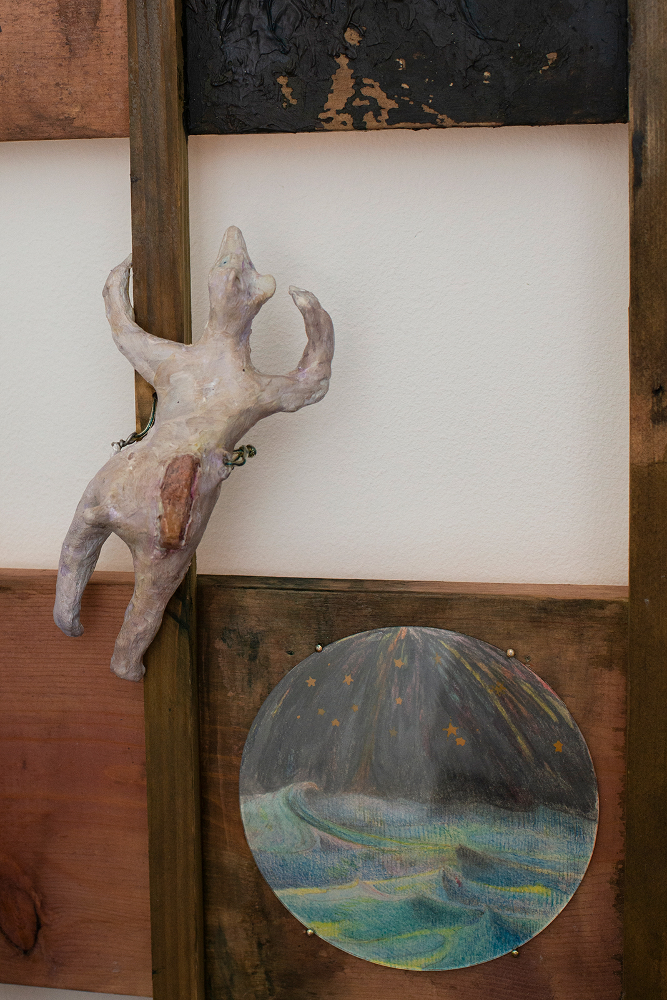
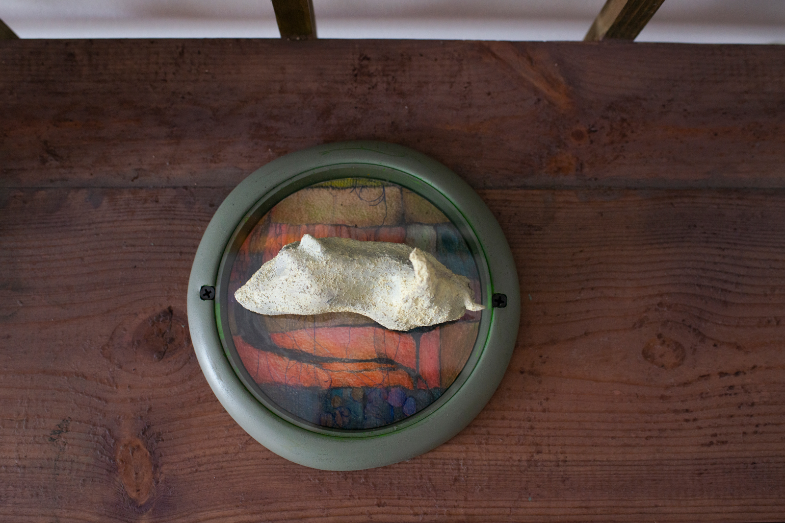
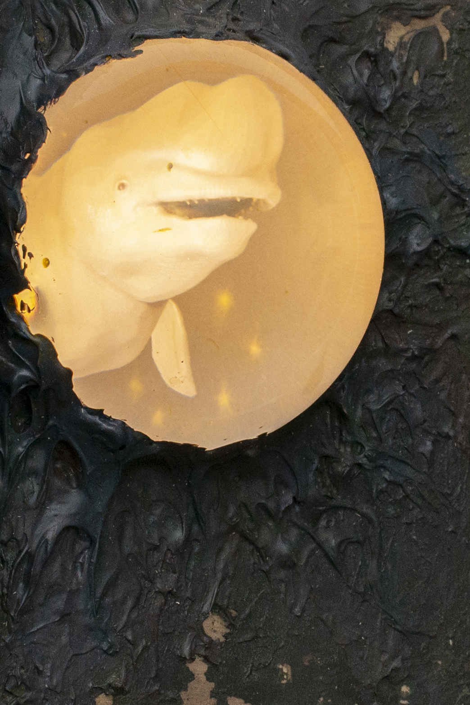
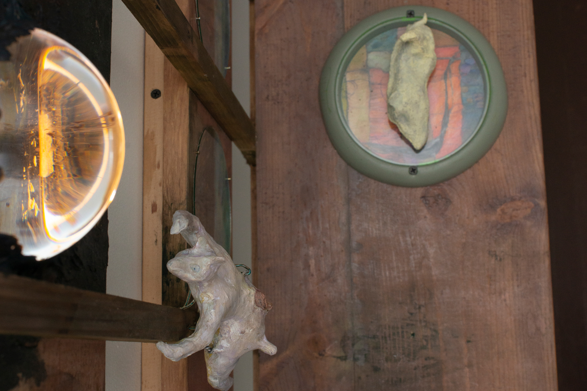
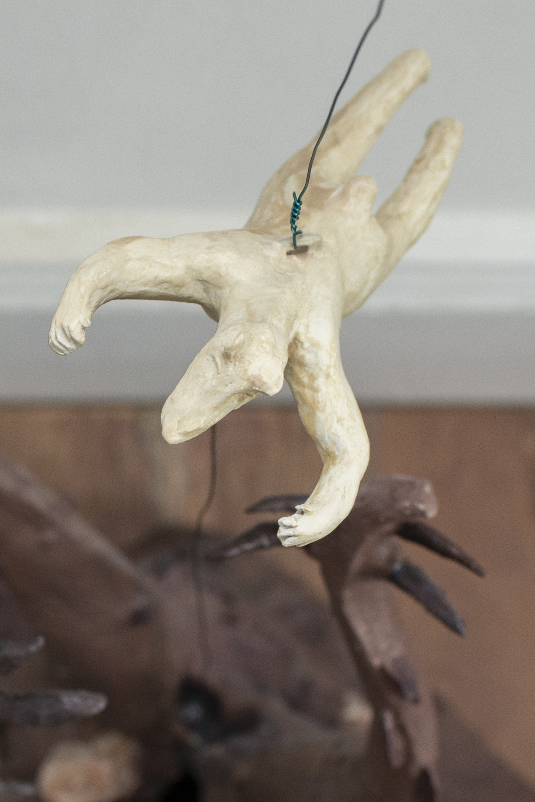
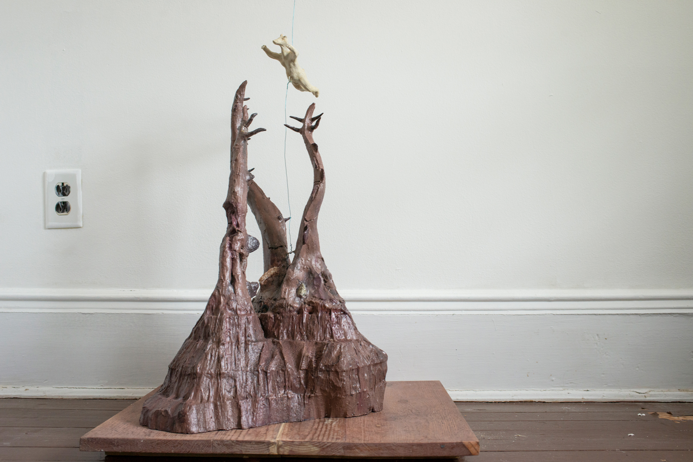
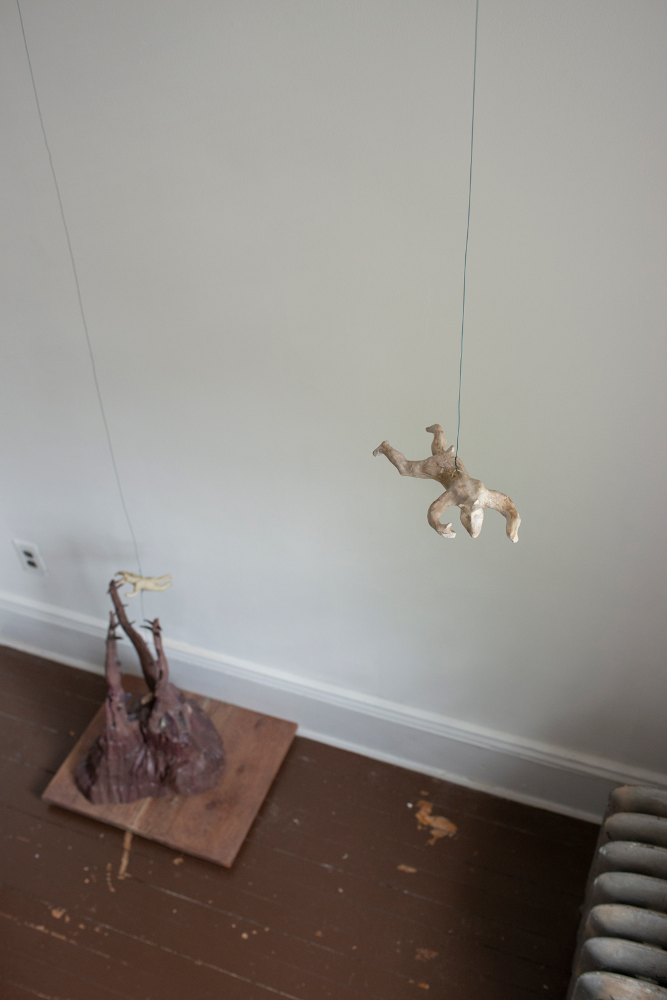
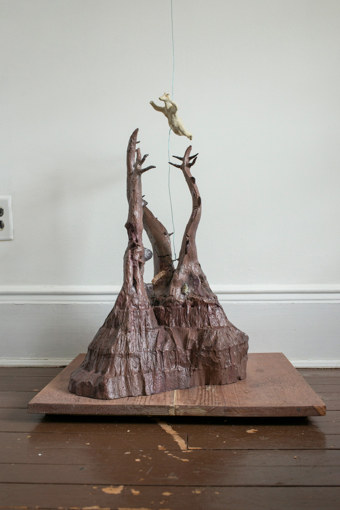
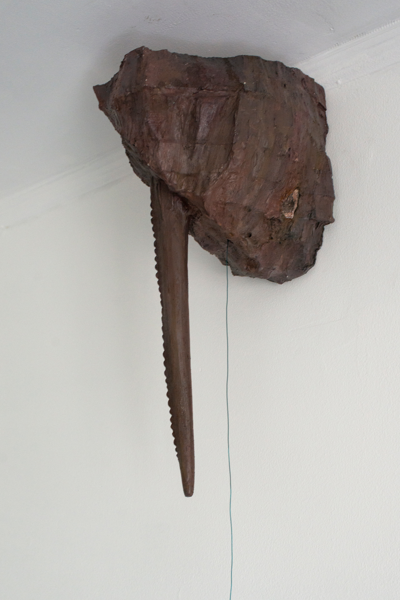
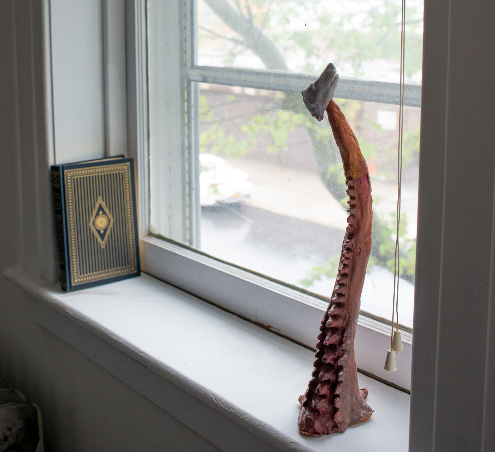
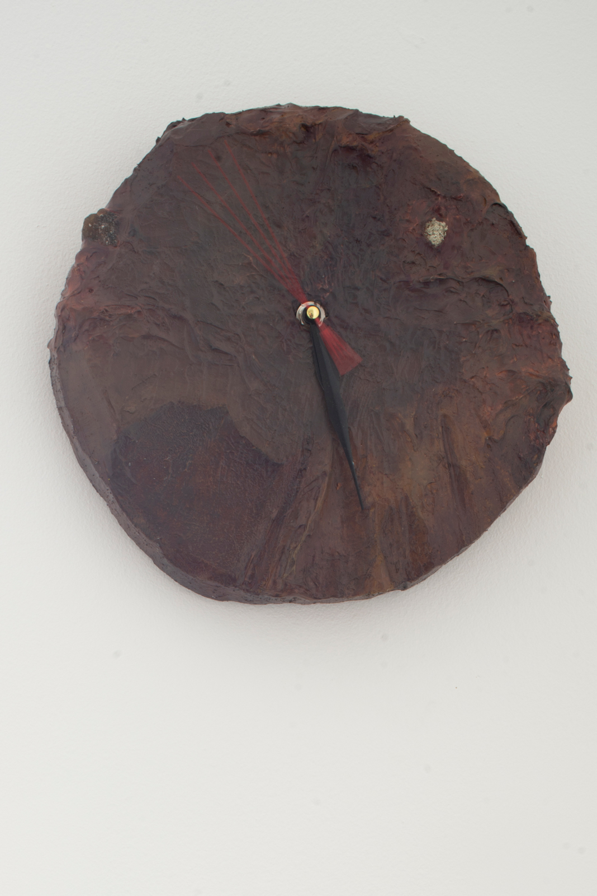
“A cry came across a million years of water and mist. A cry so alone that it shuddered in my head and body. The monster cried out to the tower. The fog horn blew. The monster roared again…Lonely and vast and far away.”
- Ray Bradbury, “The Fog Horn”
…
The decline of the polar bear toward extinction will undoubtably be marked by two major events. In the first, the second to last individual of the species perishes, leaving only one. This loss seals the destiny of the survivor, alone into the future.
This final polar bear will wander the northern terrain with an invisible ribbon tied to its ankle, a ribbon which tethers all past polar bears to Being, for this individual is their living memory — the singular expression of a heritage. And when, finally, the last specimen is finished we are confronted with the Second Event.
In the moment of the last polar bear’s passing the ribbon will be cut and like a
series of seemingly endless white balloons, all polar bears through time will be set free, no longer held to the plane of Being. They will float away to where all entities of the past go, silhouettes captured in rock, their woolen remnants maimed and skewered by the jagged stones.